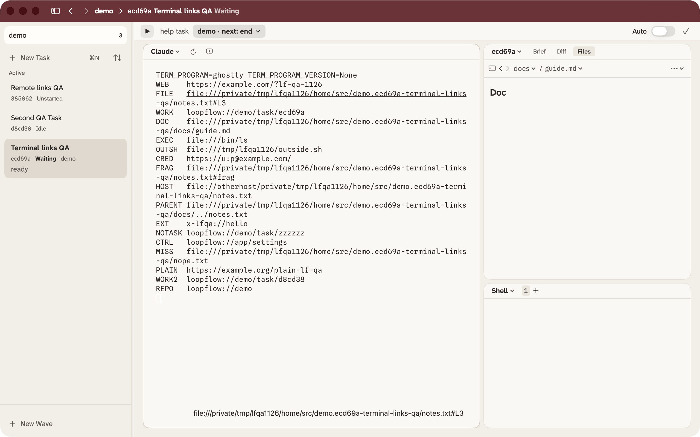
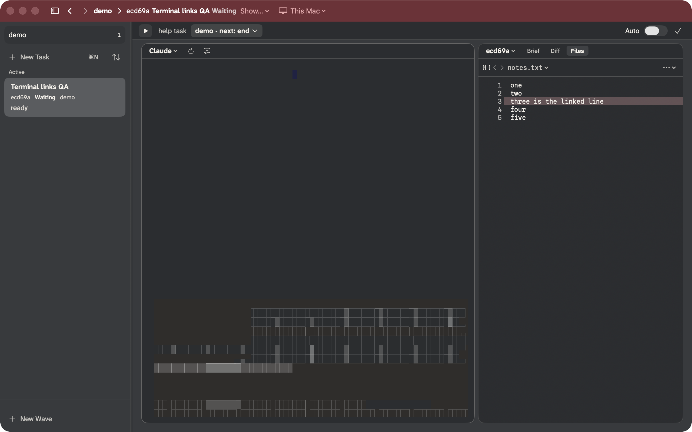
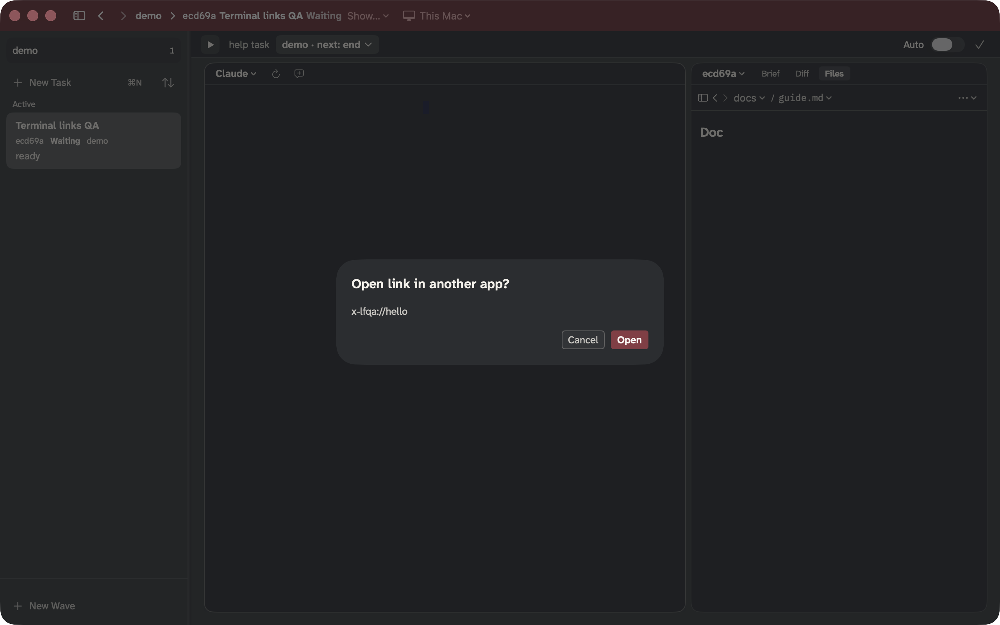
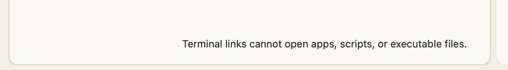
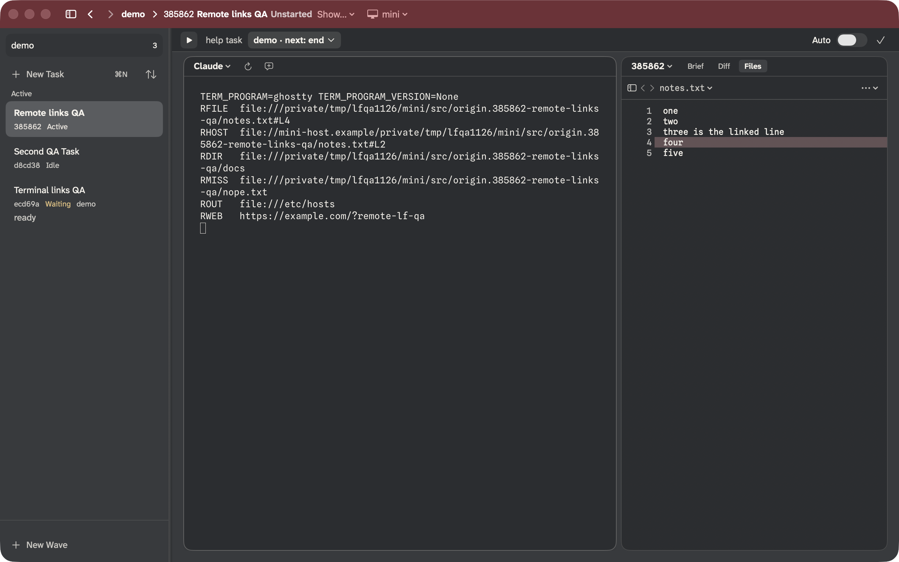
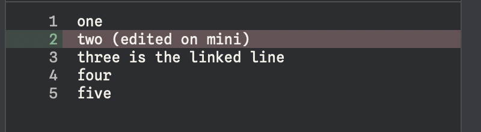
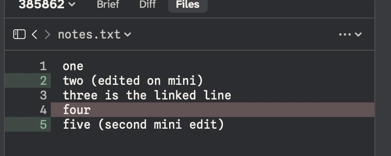
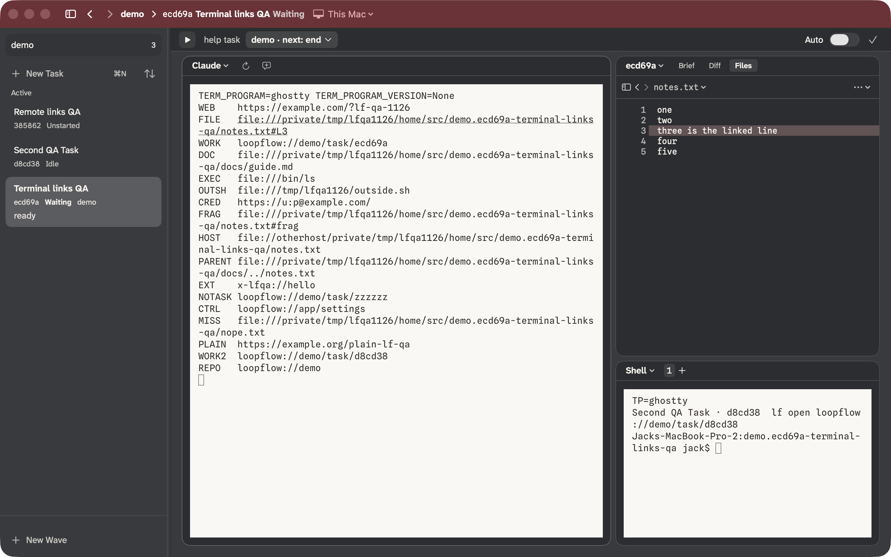
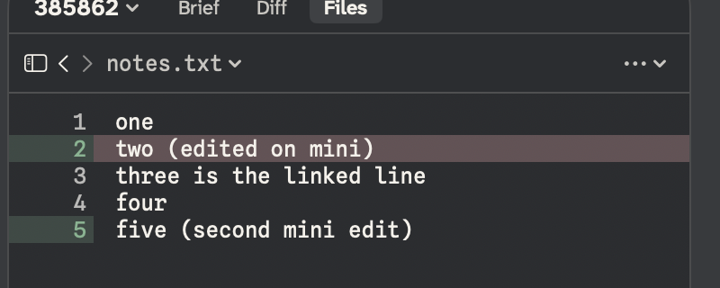

Branch build 912a030f14: lf plus an isolated Dev bundle
(com.loopflow.mac.qa1126.dev) with the QA hook, on two private Machines
on this Mac ("laptop" and "mini", the second behind a stand-in ssh). The
agent was a stand-in claude that prints each target as an OSC 8 link
(.lf/qa/link-standin.py). Hover and click went through the terminal
view's own mouseMoved/mouseDown/mouseUp with ⌘
held (link in .lf/qa/QAHook.swift). No real pointer or
keyboard was used.
The private server ran under env -i, so no TERM_PROGRAM
existed to inherit. The held provider's environment (ps -E):
COLORTERM=truecolor TERM=xterm-256color TERM_PROGRAM=ghostty
Line 1 of the stand-in read TERM_PROGRAM=ghostty TERM_PROGRAM_VERSION=None
in every pane: the laptop Task, the Task on mini, and a Desktop shell tab
(TP=ghostty).
Every OSC 8 target and the bare https://example.org/plain-lf-qa showed
the hand cursor and the target in the preview. Targets that fail syntactic checks
showed the reason and the not-allowed cursor:
row 1: feedback=https://example.com/?lf-qa-1126 cursor=hand row 3: feedback=file:///…/notes.txt#L3 cursor=hand (second row of a soft-wrapped link) row 9: feedback=Invalid web link. cursor=not-allowed (https://u:p@example.com/) row 10: feedback=Use #L followed by a valid line number in a file link. cursor=not-allowed row 14: feedback=File links need a path without parent-directory segments. cursor=not-allowed row 21: feedback=https://example.org/plain-lf-qa cursor=hand (plain text, no OSC 8)

| Link | What happened |
|---|---|
file://…/notes.txt#L3 (checkout) | Files opened notes.txt with line 3 highlighted; the terminal kept first responder |
file://…/docs/guide.md (checkout) | Files opened the rendered Markdown |
https://example.com/?lf-qa-1126, plain URL | No notice (NSWorkspace.open returned true); the preview cleared |
loopflow://demo/task/d8cd38 | The same window moved to the second Task (destination.work.id = task_d8cd38…) |
x-lfqa://hello | "Open link in another app?" sheet. Open → "No app could open the link."; Cancel → nothing |
file:///bin/ls, file:///tmp/…/outside.sh | "Terminal links cannot open apps, scripts, or executable files." |
file://otherhost/…/notes.txt | "File is on another Machine." |
file://…/nope.txt | "File is missing or unreadable." |
loopflow://demo/task/zzzzzz | "Task resolution unavailable: Task "zzzzzz" is not registered. Nothing was opened." |
loopflow://app/settings | "Work links name a repository, /task/<identifier> or /wave/<name>; got /settings": no app-control route |
loopflow://demo (repository) | Nothing visible: the Task stayed selected, no notice. open loopflow://demo from outside the app behaves the same way |



An unstarted Task was moved to mini with lf task move, then run there. Its
Session pane showed the stand-in's output from mini's checkout
(/private/tmp/lfqa1126/mini/src/origin.385862-remote-links-qa).
| Link | What happened |
|---|---|
file://…/notes.txt#L4 | Files opened mini's notes.txt at line 4 |
file://mini-host.example/…/notes.txt#L2 | Opened at line 2 despite the foreign hostname, showing "two (edited on mini)", an edit made only in mini's checkout |
file://…/docs | "Folders on another Machine cannot open from a terminal link." |
file://…/nope.txt | "File is missing or unreadable." |
file:///etc/hosts | "File is on another Machine." |


Snapshot reuse doesn't stick: I ⌘-clicked notes.txt while it was already open, switched to the other Task, edited line 5 on mini and switched back. Files showed the new line 5:

desktop zoom --on -p session), then ⌘-click the checkout file:
zoomed_pane became null, Files showed line 3 beside the Session, and the terminal kept focus.{"kind": "entered", "from": "working_tasks", …}).lf open --task d8cd38 --link: lf's OSC 8 link covers
"Second QA Task · d8cd38". Clicking it from the unfocused shell opened that Task. The
trailing loopflow://demo/task/d8cd38 text soft-wraps across two rows and isn't
detected as a plain URL (Ghostty's regex stops at the wrap).
Mini's server was restarted from a copy of the installed lf
(0.16.0+59bddd734) on the same store. The pane reattached. A file link still
opened at its line, a missing file still read "File is missing or unreadable.",
and the folder link showed the old server's own message, "Task file "docs" does not
resolve to a file inside the Task worktree". The failure stayed inside the terminal, and
other links kept working.

Server-started Sessions print OSC 8. ⌘-hover shows the hand cursor and the target,
or the reason for a refusal. ⌘-click routes web links, checkout files (local and
remote, at the line), Work links and external schemes. The refusals all cover the
plan's security list: executables, scripts, credentials, parent segments, app-control
loopflow://, and other Machines' paths. Zoom and tiles behave as the
plan describes. Nothing needed fixing.
flagsChanged monitor and pill
clearing on resign-key, which the plan lists for QA, are unchecked. Hovering the
unfocused shell went through mouseMoved directly.example.com tabs may
be open in the default browser from this run.loopflow://<repo> clicks show nothing when that
repository's window already has a Task selected. This is existing app behavior for any
repository link, not new to terminals.main; outside this change's diff.